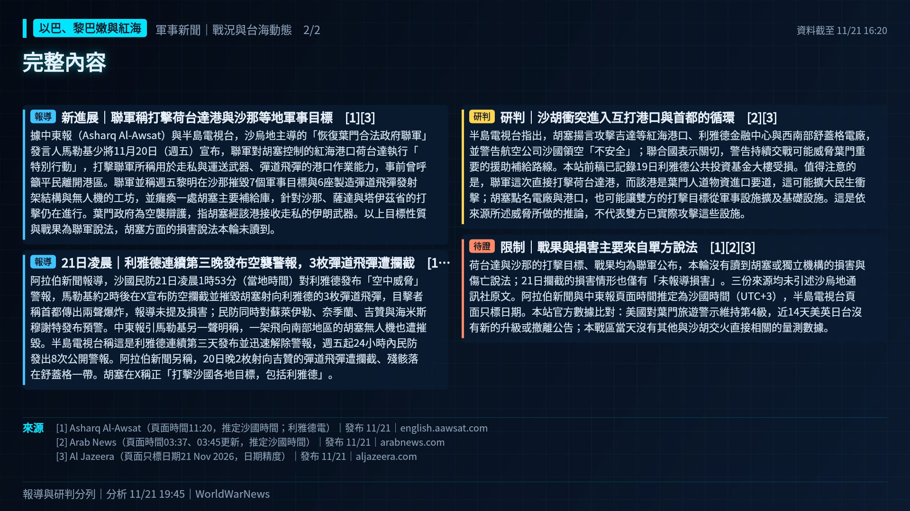

沙烏地主導聯軍20日空襲荷台達港與沙那飛彈無人機設施：胡塞21日凌晨再射3枚彈道飛彈襲利雅德遭攔截，揚言攻擊吉達港與舒蓋格電廠


報導新進展｜聯軍稱打擊荷台達港與沙那等地軍事目標
據中東報（Asharq Al-Awsat）與半島電視台，沙烏地主導的「恢復葉門合法政府聯軍」發言人馬勒基少將11月20日（週五）宣布，聯軍對胡塞控制的紅海港口荷台達執行「特別行動」，打擊聯軍所稱用於走私與運送武器、彈道飛彈的港口作業能力，事前曾呼籲平民離開港區。聯軍並稱週五黎明在沙那摧毀7個軍事目標與6座製造彈道飛彈發射架結構與無人機的工坊，並癱瘓一處胡塞主要補給庫，針對沙那、薩達與塔伊茲省的打擊仍在進行。葉門政府為空襲辯護，指胡塞經該港接收走私的伊朗武器。以上目標性質與戰果為聯軍說法，胡塞方面的損害說法本輪未讀到。
報導21日凌晨｜利雅德連續第三晚發布空襲警報，3枚彈道飛彈遭攔截
阿拉伯新聞報導，沙國民防21日凌晨1時53分（當地時間）對利雅德發布「空中威脅」警報，馬勒基約2時後在X宣布防空攔截並摧毀胡塞射向利雅德的3枚彈道飛彈，目擊者稱首都傳出兩聲爆炸，報導未提及損害；民防同時對蘇萊伊勒、奈季蘭、吉贊與海米斯穆謝特發布預警。中東報引馬勒基另一聲明稱，一架飛向南部地區的胡塞無人機也遭摧毀。半島電視台稱這是利雅德連續第三天發布並迅速解除警報，週五起24小時內民防發出8次公開警報。阿拉伯新聞另稱，20日晚2枚射向吉贊的彈道飛彈遭攔截、殘骸落在舒蓋格一帶。胡塞在X稱正「打擊沙國各地目標，包括利雅德」。
研判研判｜沙胡衝突進入互打港口與首都的循環
半島電視台指出，胡塞揚言攻擊吉達等紅海港口、利雅德金融中心與西南部舒蓋格電廠，並警告航空公司沙國領空「不安全」；聯合國表示關切，警告持續交戰可能威脅葉門重要的援助補給路線。本站前稿已記錄19日利雅德公共投資基金大樓受損。值得注意的是，聯軍這次直接打擊荷台達港，而該港是葉門人道物資進口要道，這可能擴大民生衝擊；胡塞點名電廠與港口，也可能讓雙方的打擊目標從軍事設施擴及基礎設施。這是依來源所述威脅所做的推論，不代表雙方已實際攻擊這些設施。
待證限制｜戰果與損害主要來自單方說法
荷台達與沙那的打擊目標、戰果均為聯軍公布，本輪沒有讀到胡塞或獨立機構的損害與傷亡說法；21日攔截的損害情形也僅有「未報導損害」。三份來源均未引述沙烏地通訊社原文。阿拉伯新聞與中東報頁面時間推定為沙國時間（UTC+3），半島電視台頁面只標日期。本站官方數據比對：美國對葉門旅遊警示維持第4級，近14天美英日台沒有新的升級或撤離公告；本戰區當天沒有其他與沙胡交火直接相關的量測數據。
- [1] Asharq Al-Awsat（頁面時間11:20，推定沙國時間；利雅德電）｜發布 11/21
- [2] Arab News（頁面時間03:37、03:45更新，推定沙國時間）｜發布 11/21
- [3] Al Jazeera（頁面只標日期21 Nov 2026，日期精度）｜發布 11/21